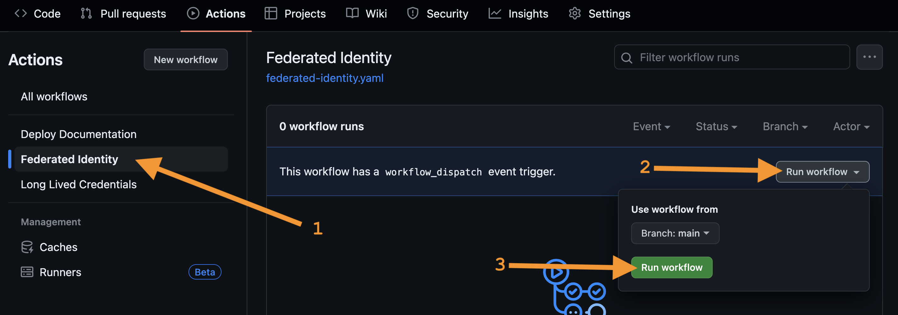

Getting Started
Prerequisites
Make sure you have completed the Prerequisites before starting the workshop.
- GitHub Account
- Azure Subscription
- AWS Account
- Google Cloud Project
GitHub Repository Configuration
Start by forking Puma Security's Nymeria Workload Identity Repository into your personal GitHub account.
-
Sign in to your GitHub account.
-
Browse to the Puma Security Nymeria Workload Identity Repository.
-
In the top right-hand corner, press the Fork button to fork the repository to your personal GitHub account.
-
Press the Create fork button to fork the repository into your personal GitHub account.
-
In your forked repository, press the Code button and select HTTPS to view your clone URL. Press the copy button to put the clone URL onto your clipboard. Keep this value handy as you will need it later to bootstrap each cloud environment.
Azure Subscription
Azure Bootstrap
Complete the following steps to create the resources required to authenticate the Nymeria GitHub Action to your Azure subscription.
-
Sign into the Azure Portal and press the Cloud Shell icon next to the search box.

-
Run the following commands in the Terminal to clone your
nymeriarepository into the Azure cloud drive. -
Change the directory to the
~/clouddrive/nymeria/src/01_azure_initdirectory. -
Apply the Terraform configuration to bootstrap your Azure subscription with both long-lived credentials and the workload identity resources.
-
Terraform should confirm the successful creation of the workload identity resources.
Terminal Output
Apply complete! Resources: 13 added, 0 changed, 0 destroyed. Outputs: azure_subscription_id = <sensitive> azure_tenant_id = <sensitive> azure_virtual_machine_user_identity_id = "__redacted__" github_service_principal_client_id = <sensitive> github_service_principal_client_secret = <sensitive> resource_group_name = "nymeria-federated-identity" terraform_state_storage_account_name = "terraformmlgxt9hl"
Azure GitHub Secret
Configure the required GitHub Action secret for the Nymeria repository to deploy resources to your Azure subscription.
-
Run the following command to display the Terraform output values.
-
Note the values of the
azure_tenant_idandazure_virtual_machine_user_identity_principal_idoutputs. These will be needed to bootstrap both your AWS and Google Cloud accounts. -
Copy the entire output value onto the clipboard for use in the next step.
Terminal Output
{ "azure_subscription_id": { "sensitive": true, "type": "string", "value": "__redacted__" }, "azure_tenant_id": { "sensitive": true, "type": "string", "value": "__redacted__" }, "azure_virtual_machine_user_identity_id": { "sensitive": false, "type": "string", "value": "__redacted__" }, "github_service_principal_client_id": { "sensitive": true, "type": "string", "value": "__redacted__" }, "github_service_principal_client_secret": { "sensitive": true, "type": "string", "value": "__redacted__" }, "resource_group_name": { "sensitive": false, "type": "string", "value": "nymeria-federated-identity" }, "terraform_state_storage_account_name": { "sensitive": false, "type": "string", "value": "terraformznoypqbp" } } -
Browse to your GitHub repository's Settings.
-
In the left navigation, press the Secrets and variables > Actions menu item.

-
Press the New repository secret button.
-
Enter the following values for the new secret:
-
Name:
AZURE_BOOTSTRAP -
Secret: [Paste the JSON Terraform output]
-
-
Press the Add Secret button.
AWS Account
AWS Bootstrap
Complete the following steps to create the resources required for the Azure virtual machine to authenticate your AWS account.
-
Sign into the AWS Web Console.
-
Set the region (top right-hand corner) to
us-east-2 (Ohio).Why Ohio?
The Terraform deployment uses the
us-east-2region by default. This can be overridden by setting theTF_VAR_regionenvironment variable to a different region. -
Press the Cloud Shell icon next to the search box.

-
Unlike Azure and Google Cloud, the AWS CloudShell does not come with Terraform preinstalled. You will need to install Terraform before you can initialize your AWS account.
-
Run the following commands to clone your
nymeriarepository into the AWS cloud drive. -
Change the directory to the
~/nymeria/src/virtual_machines/02_aws_init/directory. -
Apply the Terraform configuration to bootstrap your AWS account with both long-lived credentials and the workload identity resources.
-
Terraform should confirm the successful creation of the workload identity resources.
Terminal Output
Apply complete! Resources: 10 added, 0 changed, 0 destroyed. Outputs: aws_default_region = "us-east-2" aws_s3_bucket = "nymeria-cross-cloud-ipdrhsne" azure_vm_aws_access_key_id = <sensitive> azure_vm_aws_role_arn = "arn:aws:iam::123456789012:role/nymeria-azure-vm-role" azure_vm_aws_secret_access_key = <sensitive>
AWS GitHub Secret
-
From the AWS CloudShell terminal, run the following command to display the Terraform output.
-
Copy the entire output value onto the clipboard for use in the next step.
Terminal Output
{ "aws_s3_bucket": { "sensitive": false, "type": "string", "value": "nymeria-cross-cloud-yh831o00" }, "azure_vm_aws_access_key_id": { "sensitive": true, "type": "string", "value": "__redacted__" }, "azure_vm_aws_role_arn": { "sensitive": false, "type": "string", "value": "arn:aws:iam::123456789012:role/nymeria-azure-vm-role" }, "azure_vm_aws_secret_access_key": { "sensitive": true, "type": "string", "value": "__redacted__" } } -
Browse to your GitHub repository's Settings.
-
In the left navigation, press the Secrets and variables > Actions menu item.
-
Press the New repository secret button.
-
Enter the following values for the new secret:
-
Name:
AWS_BOOTSTRAP -
Secret: Paste the JSON Terraform output
-
-
Press the Add Secret button.
Google Cloud Project
Google Cloud Bootstrap
Complete the following steps to create the resources required for the Azure virtual machine to authenticate your Google cloud project.
-
Sign into the Google Cloud Web Console.
-
Select your project in the dropdown list (see #1 in the screenshot below).
-
Note the value of the Project ID as you will need it later to bootstrap your Google Cloud project (see #2 in the screenshot below).
-
Press the Cloud Shell icon next to the search box (see #3 in the screenshot below).
-
Run the following commands to clone your
nymeriarepository into the Google cloud drive. -
Change the directory to the
~/clouddrive/nymeria/src/03_gcp_initdirectory. -
Apply the Terraform configuration to bootstrap your Google Cloud project with both long-lived credentials and the workload identity resources.
Note
The Cloud Shell session will prompt you to grant Terraform permission to authenticate to the project. You will need to press the Authorize button to continue.
-
Terraform should confirm the successful creation of the workload identity resources.
Google Cloud GitHub Secret
-
From the Google CloudShell terminal, run the following command to display the Terraform output. Copy the entire output value onto the clipboard for use in the next step.
Terminal Output
{ "azure_vm_google_service_account_key": { "sensitive": true, "type": "string", "value": "__redacted__" }, "gcs_bucket": { "sensitive": false, "type": "string", "value": "nymeria-cross-cloud-n26pm4d6" }, "workload_identity_client_configuration": { "sensitive": false, "type": "string", "value": "..." } } -
Browse to your GitHub repository's Settings.
-
In the left navigation, press the Secrets and variables > Actions menu item.
-
Press the New repository secret button.
-
Enter the following values for the new secret:
-
Name:
GCP_BOOTSTRAP -
Secret: Paste the JSON Terraform output
-
-
Press the Add Secret button.
Nymeria GitHub Deployment
The final setup step is deploying the Nymeria virtual machine to your Azure subscription. This virtual machine will be used to authenticate to your AWS and Google Cloud accounts.
-
In your GitHub repository, navigate to the Actions tab. Then, click on the I understand my workflows, go ahead and enable them. button.
-
Click on the Federated Identity workflow. On the right, press the Run workflow dropdown list and then press the Run workflow button. This will start the workflow on the
mainbranch.
-
The Federated Identity workflow should complete the a green success status. Feel free to select the run to view the jobs and output logs.
Next Steps
With your Azure, AWS, and Google Cloud accounts bootstrapped, you are ready to start reviewing the Long-lived Credentials.